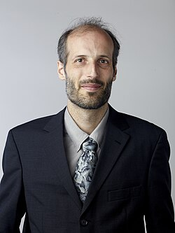

Sir Martin Hairer | |
|---|---|
 Hairer in 2014 | |
| Born | 14 November 1975 Geneva, Switzerland |
| Citizenship |
|
| Education | University of Geneva |
| Spouse |
Xue-Mei Li (m. 2003) |
| Father | Ernst Hairer |
| Awards |
|
| Scientific career | |
| Fields | |
| Institutions | École Polytechnique Fédérale de Lausanne Imperial College London University of Warwick New York University[2] |
| Thesis | Comportement Asymptotique d'Équations à Dérivées Partielles Stochastiques (2001) |
| Jean-Pierre Eckmann[3] | |
| Website | hairer |
{kind=link}
Sir Martin Hairer KBE FRS (born 14 November 1975)[2] is an Austrian-British mathematician and mathematical physicist working in the field of stochastic analysis, in particular stochastic partial differential equations. He is Professor of Mathematics at EPFL (École Polytechnique Fédérale de Lausanne) and at Imperial College London. He previously held appointments at the University of Warwick and the Courant Institute of New York University.[5][6][7][8] In 2014 he was awarded the Fields Medal,[9] one of the highest honours a mathematician can achieve.[10] In 2020 he won the 2021 Breakthrough Prize in Mathematics.[11]
Early life and education
Hairer was born in Geneva, Switzerland.[2] He attended the Collège Claparède Geneva where he received his high school diploma in 1994. He entered a school science competition with sound editing software that was developed into Amadeus,[12] and later continued to maintain the software in addition to his academic work; it continued to be widely used as of 2020.[11] He then attended the University of Geneva, where he obtained his Bachelor of Science degree in Mathematics in July 1998, Master of Science in Physics in October 1998 and PhD in Physics under the supervision of Jean-Pierre Eckmann in November 2001.[3][13]
Research and career
Hairer is active in the field of stochastic partial differential equations in particular, and in stochastic analysis and stochastic dynamics in general.[14] He has worked on variants of Hörmander's theorem, systematisation of the construction of Lyapunov functions for stochastic systems, development of a general theory of ergodicity for non-Markovian systems, multiscale analysis techniques, theory of homogenisation, theory of path sampling and theory of rough paths[14] and, in 2014, on his theory of regularity structures.[15]
Under the name HairerSoft, he develops Macintosh software.[12]
Affiliations

- Regius Professor of Mathematics, University of Warwick (2014–2017)[5]
- Member of the scientific steering committee of ETHZ-ITS (2013–2019)[16]
- Institut Henri Poincaré, member of scientific steering committee (2012–2020)[17]
- Mathematical Research Institute of Oberwolfach, member of steering committee (2013–2021)[18]
- Editor, Probability Theory and Related Fields[19]
- Editor, Nonlinear Differential Equations and Applications[20]
- Editor, Annales Henri Poincaré Ser. B[21]
- Editor, Electronic Journal of Probability[22]
- Editor, Stochastic Partial Differential Equations: Analysis and Computations[23]
- Visiting Professor, Université Paul Sabatier, Toulouse (December 2006 and February 2014)[13]
- Visiting Professor, Technische Universität Berlin (July 2009)[13]
- Visiting Professor, École Normale Supérieure, Paris (April 2013)[13]
- Member, Institute for Advanced Study, Princeton (March – April 2014)[13]
- Lipschitz Lectures, Hausdorff Center for Mathematics, University of Bonn (July 2013)[24]
- Minerva Lectures, Columbia University (February 2014)[25]
- Euler Lecture, Zuse Institute Berlin (May 2014)[26]
- Medallion Lecture, Institute of Mathematical Statistics (July 2014)[27]
- Lévy Lecture, Conference on Stochastic Processes and their Applications (July 2014)[28]
- Fields Medal lecture, International Congress of Mathematicians, Seoul (August 2014)[29]
- Collingwood Lecture, Durham University (February 2015)[13]
- Bernoulli Lecture, École polytechnique fédérale de Lausanne (May 2015) [13]
- Leonardo da Vinci Lecture, University of Milan (October 2015)[13]
- Kai-Lai Chung Lecture, Stanford University (November 2015)[13]
- Michalik Lecture, University of Pittsburgh (December 2015)[13]
Awards and honours
- 2006–2011 Advanced Research Fellowship, Engineering and Physical Sciences Research Council (EPSRC)[30]
- 2007 – Editors' Choice Award, Macworld[31]
- 2008 – Whitehead Prize, London Mathematical Society[32][33][34]
- 2008 – Philip Leverhulme Prize, Leverhulme Trust[35][36]
- 2009 – Royal Society Wolfson Research Merit Award[37]
- 2012 – Leverhulme Research Leadership Award, Leverhulme Trust[38]
- 2013 – Fermat Prize, Institut de Mathématiques de Toulouse[39][40]
- 2014 – Consolidator grant, European Research Council[41]
- 2014 – Elected Fellow of the Royal Society (FRS) in 2014[14]
- 2014 – Fröhlich Prize, London Mathematical Society[42]
- 2014 – Fields Medal[9]
- 2015 – Fellow of the American Mathematical Society[43]
- 2015 – Member of the Austrian Academy of Sciences[44]
- 2015 – Member of the Academy of Sciences Leopoldina[45]
- 2015 – Member of the Academia Europaea[46]
- 2016 – Honorary Knight Commander of the Order of the British Empire[47][37]
- 2017 – Foreign member of the Polish Academy of Sciences[48]
- 2019 – Substantive Knight Commander of the Order of the British Empire[49]
- 2021 – Breakthrough Prize in Mathematics[50][51]
- 2022 – King Faisal Prize[52]
- 2022 – Medal of the Erwin Schrödinger International Institute for Mathematics and Physics[53]
- 2025 – Sylvester Medal of the Royal Society.[54]
Personal life
Hairer holds Austrian and British nationality, and speaks French, German and English; he married fellow mathematician Li Xue-Mei in 2003.[2][4] His father is Ernst Hairer, a mathematician at the University of Geneva.[55]
References
- ^ a b Martin Hairer publications indexed by Google Scholar
- ^ a b c d e "Hairer, Martin". Who's Who (online Oxford University Press ed.). Oxford: A & C Black. 2016. doi:10.1093/ww/9780199540884.013.U282027. (Subscription or UK public library membership required.)
- ^ a b Martin Hairer at the Mathematics Genealogy Project
- ^ a b Xue-Mei, Li (2017). "Xue-Mei Li: About me". xuemei.org.
- ^ a b Warwick Mathematics Institute. "Professor Martin Hairer, FRS". Archived from the original on 1 December 2017.
- ^ Eckmann, J.-P.; Hairer, M. (2001). "Uniqueness of the Invariant Measure for a Stochastic PDE Driven by Degenerate Noise". Communications in Mathematical Physics. 219 (3): 523. arXiv:nlin/0009028. Bibcode:2001CMaPh.219..523E. doi:10.1007/s002200100424. S2CID 5565100.
- ^ Martin Hairer's publications indexed by the Scopus bibliographic database. (subscription required)
- ^ Hairer, M.; Mattingly, J. (2006). "Ergodicity of the 2D Navier–Stokes equations with degenerate stochastic forcing". Annals of Mathematics. 164 (3): 993. arXiv:math/0406087. doi:10.4007/annals.2006.164.993. S2CID 11828895.
- ^ a b Mireille Chaleyat-Maurel (2014). "IMU-Net 66b : Special issue on IMU Prizes and Medals at ICM 2014 in Seoul". International Mathematical Union (IMU).
- ^ Daniel Saraga: The equation Tamer, in: Horizons, Swiss National Science Foundation No. 103, p. 26–7
- ^ a b Sample, Ian (10 September 2020). "UK mathematician wins richest prize in academia". The Guardian.
- ^ a b "Amadeus – Audio waveform editors / sound and voice recorders for macOS X". hairersoft.com. Retrieved 10 September 2020.
- ^ a b c d e f g h i j Hairer, Martin. "Curriculum Vitae" (PDF). Retrieved 6 May 2014.
- ^ a b c "Professor Martin Hairer FRS". London: Royal Society. 2014.
- ^ Hairer, Martin (2014). "A theory of regularity structures". Inventiones Mathematicae. 198 (2): 269–504. arXiv:1303.5113. Bibcode:2014InMat.198..269H. doi:10.1007/s00222-014-0505-4. S2CID 119138901.
- ^ "Organisation of the Institute for Theoretical Studies – Institute for Theoretical Studies | ETH Zurich". Eth-its.ethz.ch. Retrieved 14 August 2014.
- ^ Institut Henri Poincaré. "Members' directory". Archived from the original on 7 May 2014. Retrieved 6 May 2014.
- ^ Mathematisches Forschungsinstitut Oberwolfach. "Scientific Committee". Retrieved 6 May 2014.
- ^ Springer. "Probability Theory and Related Fields – Editorial Board". Retrieved 6 May 2014.
- ^ Springer. "Nonlinear Differential Equations and Applications – Editorial Board". Retrieved 6 May 2014.
- ^ Institute of Mathematical Statistics. "Annales de l'Institut Henri Poincaré". Retrieved 6 May 2014.
- ^ Electronic Journal of Probability. "Editorial Team". Retrieved 6 May 2014.
- ^ Springer. "Stochastic Partial Differential Equations: Analysis and Computations – Editorial Board". Retrieved 6 May 2014.
- ^ Hausdorff Center for Mathematics, University of Bonn. "Lipschitz Lectures". Retrieved 6 May 2014.
- ^ Columbia University. "Minerva Lectures". Retrieved 6 May 2014.
- ^ Zuse Institute, Berlin. "Euler-Vorlesung 2014". Retrieved 6 May 2014.
- ^ Institute of Mathematical Statistics. "Awards – Special Lectures Winners". Archived from the original on 19 May 2014. Retrieved 6 May 2014.
- ^ University of Buenos Aires. "37th Conference on Stochastic Processes and their Applications". Retrieved 6 May 2014.
- ^ Warwick Mathematics Institute (21 October 2013). "Five Warwick mathematicians to speak at ICM 2014". Retrieved 6 May 2014.
- ^ Warwick Mathematics Institute (29 May 2006). "EPSRC Advanced Research Fellowship awarded to Martin Hairer". Archived from the original on 7 May 2014. Retrieved 6 May 2014.
- ^ Macworld (19 December 2007). "The 23rd Annual Editors' Choice Awards". Retrieved 6 May 2014.
- ^ London Mathematical Society. "List of LMS prize winners: Whitehead Prize". Retrieved 6 May 2014.
- ^ London Mathematical Society (4 July 2008). "London Mathematical Society Prizes 2008" (PDF). Archived from the original (PDF) on 13 March 2014. Retrieved 14 April 2010.
- ^ Warwick Mathematics Institute (6 July 2008). "Martin Hairer receives LMS Whitehead Prize". Retrieved 6 May 2014.
- ^ Warwick Mathematics Institute (6 November 2008). "Martin Hairer wins Philip Leverhulme Prize". Retrieved 6 May 2014.
- ^ "Report of the Leverhulme Trustees 2008" (PDF). Archived from the original (PDF) on 21 April 2014. Retrieved 14 August 2014.
- ^ a b Sheng, Yunhe. "Mathematician receives top honour". London Mathematical Society. Retrieved 11 September 2022.
- ^ Warwick Mathematics Institute (27 November 2012). "Martin Hairer wins Leverhulme Research Leadership Award". Retrieved 6 May 2014.
- ^ Institut de Mathématiques de Toulouse (6 November 2013). "Prix Fermat 2013". Archived from the original on 7 May 2014. Retrieved 6 May 2014.
- ^ Warwick Mathematics Institute (10 November 2013). "Martin Hairer awarded 2013 Fermat Prize". Retrieved 6 May 2014.
- ^ Warwick Mathematics Institute (4 February 2014). "Martin Hairer & José Luis Rodrigo win ERC Consolidator grants". Retrieved 6 May 2014.
- ^ London Mathematical Society. "List of LMS prize winners: Fröhlich Prize". Retrieved 7 July 2014.
- ^ 2016 Class of the Fellows of the AMS, American Mathematical Society, retrieved 16 November 2015.
- ^ "ÖAW wählte 40 neue Mitglieder". Archived from the original on 5 August 2018. Retrieved 2 April 2016.
- ^ "Nationalakademie Leopoldina ernennt neue Mitglieder".
- ^ "Martin Hairer – member of AE".
- ^ "Honorary awards" (PDF).
- ^ "Wydział III Nauk Ścisłych i Nauk o Ziemi PAN – Członkowie zagraniczni".
- ^ "Central Chancery of the Orders of Knighthood".
- ^ Ian Sample (10 September 2020). "UK mathematician wins richest prize in academia". The Guardian. Retrieved 10 September 2020.
- ^ Hayley Dunning (10 September 2020). "Imperial mathematician scoops $3m Breakthrough Prize". Imperial College London. Retrieved 10 September 2020.
- ^ King Faisal Prize 2022
- ^ "Medal Ceremony and Award Lecture of ESI Medal 2022". YouTube. 13 November 2022.
- ^ Sylvester Medal 2025
- ^ Wolchover, Natalie (12 August 2014). "In Noisy Equations, One Who Heard Music". Quanta Magazine. Retrieved 30 July 2025.
This article incorporates text available under the CC BY 4.0 license.